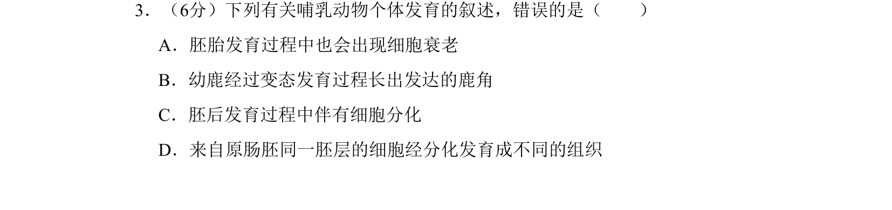
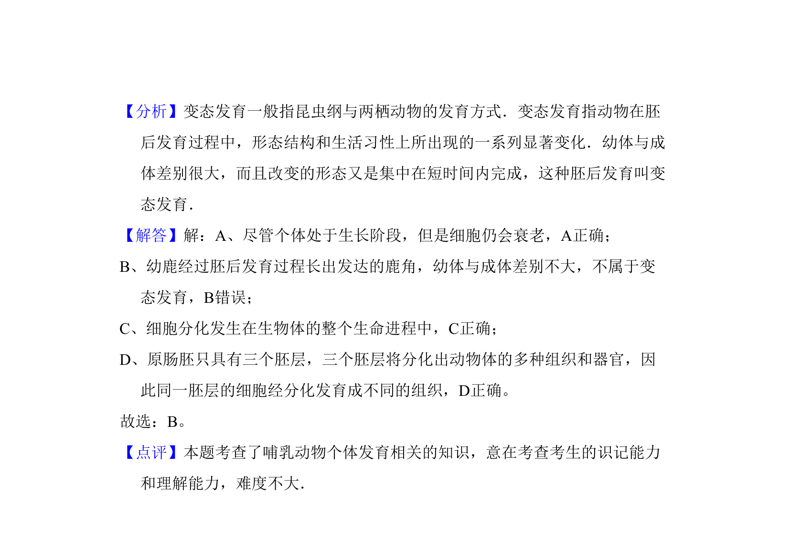

考点：动物胚胎发育过程 细胞衰老 变态发育 细胞分化

本题考查哺乳动物个体发育相关叙述的正误判断，涉及胚胎发育、细胞衰老、变态发育和细胞分化等概念。

📄 原 PDF 第 2 页：
素材/真题/吉林/2008-2024·（吉林）生物高考真题/2009年高考生物试卷（全国卷Ⅱ）（解析卷）.pdf
3．（6分）下列有关哺乳动物个体发育的叙述，错误的是（ ） A．胚胎发育过程中也会出现细胞衰老 B．幼鹿经过变态发育过程长出发达的鹿角 C．胚后发育过程中伴有细胞分化 D．来自原肠胚同一胚层的细胞经分化发育成不同的组织
【考点】S2：动物胚胎发育的过程．菁优网版权所有